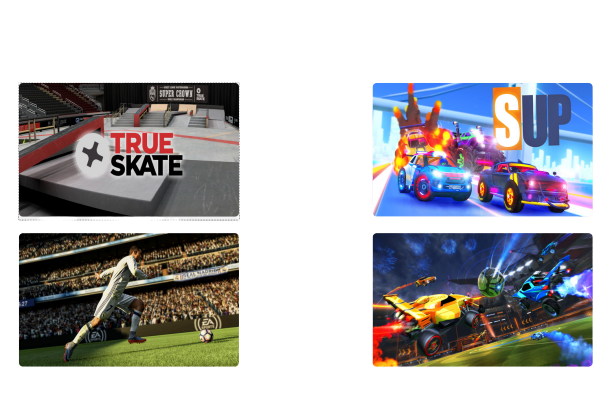

GameMet
1.1 What is GameMet
GameMet is a website where you can find other people who play the same game as you, to enter into a list, you must log in with an e-mail address and a password, weekly new Game recommendations where automatically made with the most log-in data. The website can used at pc or tablet or mobile phone.
1.2 Idea of GameMet
Who wants to play alone computer or mobile games. The website GameMet helps you to find a friend who plays exactly the same game as you play. With GameMet you do not have to play alone anymore in the future.
1.3 Register
On the website GameMet you can create an account with your E-mail address and a password so you can follow your friends and the names and ages and so on of them.
1.3.1 Data bank
We have to make a data bank so that our website works. We want to programm a data bank in sql to add friends remove or delete them for example
1.4 Game Collection
On our website there will be the newest and the most liked games like Clash of Clans,Fortnite or for example Fifa20
1.4.1 Recommendation
On our website there are also recommendations about games so you can decide if you want it or not.